| 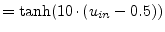 | (10.252) | |
| 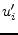 | 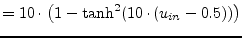 | (10.253) |
Logical (boolean) functions (OR, AND, XOR etc.) can be modeled using macro models. Here, each input gets the transfer characteristic and its derivative described as follows:
| 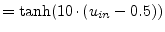 | (10.252) | |
| 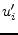 | 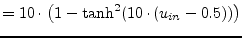 | (10.253) |
The resulting voltages  for each input are combined to create
the wanted function for a device with
for each input are combined to create
the wanted function for a device with  inputs:
inputs:
| Inverter: | 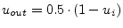 | (10.254) |
| NOR: |  |
(10.255) |
| OR: | (10.256) | |
| AND: | 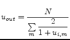 | (10.257) |
| NAND: | (10.258) | |
| XOR: | 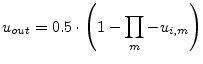 | (10.259) |
| XNOR: | 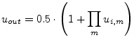 | (10.260) |
The above-mentioned functions model devices with 0V as logical
low-level and 1V as logical high-level. Of course, they can be easily
transformed into higher voltage levels by multiplying the desired
high-level voltage to the output voltage  and dividing the
input voltages 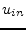 by the desired high-level voltage. Note: The
derivatives also get divided by the desired high-level
voltage, but they are not multiplied by the desired high-level
voltage.
and dividing the
input voltages 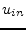 by the desired high-level voltage. Note: The
derivatives also get divided by the desired high-level
voltage, but they are not multiplied by the desired high-level
voltage.
To perform a simulation on these devices, the first derivatives are also needed:
| Inverter: | 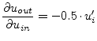 | (10.261) |
| OR: | 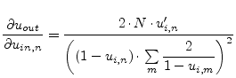 | (10.262) |
| NOR: | 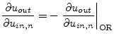 | (10.263) |
| AND: | 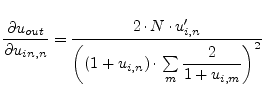 | (10.264) |
| NAND: | 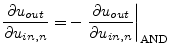 | (10.265) |
| XOR: | 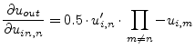 | (10.266) |
| XNOR: | 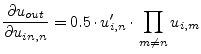 | (10.267) |
A problem of these macro models are the numbers of input ports. The output voltage levels worsen with increasing number of ports. The practical limit lies around eight input ports.
With that knowledge it is now easy to create the MNA matrix. The first port is the output port of the device. So, for a 2-input port device, it is:
The above MNA matrix entries are also used during the non-linear DC and transient analysis with the 0 in the right hand side vector replaced by an equivalent voltage
| 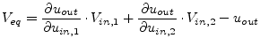 | (10.269) |
With the given small-signal matrix representation, building the S-parameters is easy.
| 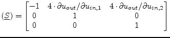 | (10.270) |
These matrices can easily extended to any number of input ports.